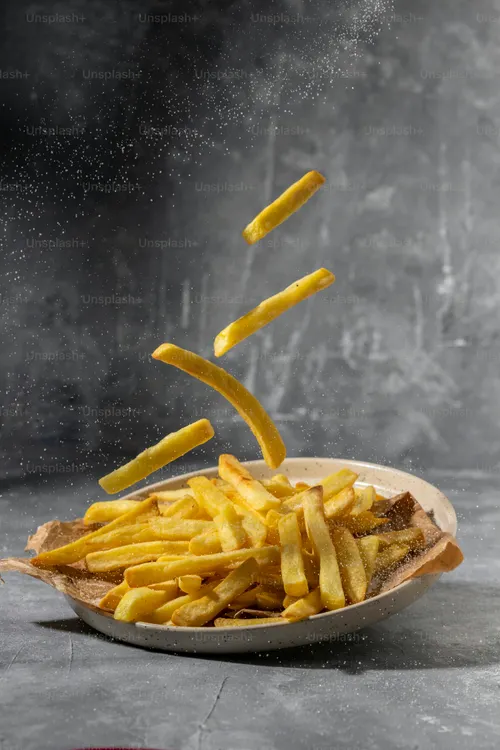

Receta de papas fritas
Receta de papas fritas caseras

Ingredientes
3 o 4 patatas (300g.)
4 dientes de ajo
Aceite de oliva
Sal
Elaboración (Pasos)
Calentar aceite en una sartén.
Añadir las patatas cortadas, la sal y los ajos.
Freír al gusto.
Servir en plato.